毕设从调研到完工 基于个性推荐的商家自播带货系统
题目概述 自播带货APP系统是一种利用互联网平台和直播技术进行商品展示、咨询答复、导购和后台服务的新型服务方式。该系统允许商家通过自己开设的直播间，由主播进行商品推介和销售。 通过自播带货APP系统，商家可以实现近距离的商品展示，将产品的特点和优势直观地展示给观众。主播可以通过直播实时与观众互动，回答他们的问题，提供专业的咨询和导购服务，帮助观众做出购买决策。该系统还提供了后台服务功能，商家可以在后台管理系统中对商品进行管理和上架，设置商品的价格、库存等信息。同时，商家可以通过系统统计分析观众的购买行为和偏好，为观众提供个性化的推荐和服务，提高销售转化率。
自播带货APP系统的优势在于，它打破了传统的线下购物限制，消除了时间和空间的限制。观众可以随时随地通过手机或电脑参与直播，享受到线上购物的便利和快捷。同时，系统提供了实时的互动功能，观众可以与主播进行即时的沟通和交流，获得更好的购物体验。
软件过程核心思路与开发计划 参考软件工程的可行性分析、需求分析、软件设计、软件开发、测试维护的流程，不对各个阶段做完全明确性的划分，同时对各个阶段的顺序不作硬性规定 ，各个阶段可以相互穿插相互验证 以提高整体的进度推进速度（比如在调研时就思考部分软件设计问题并进行原型开发与验证），同时在整个过程中贯穿设计与测试 流程，采用敏捷、迭代 和原型化 以及增量模型 的思想规范整个软件过程。
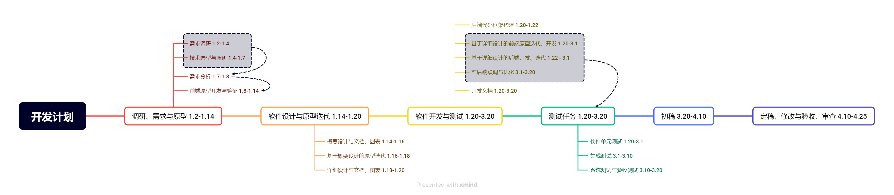
需求调研 魏晓芳,郭芳蓉. “村播带货”方兴未艾 助力乡村振兴[N]. 泉州晚报,2023-10-18(008).
该论文阐述了当下村民选择通过直播的形式带动农产品销售，为农村带来更高经济效益，同时也指出了乡村直播中人才缺口大、直播平台使用困难、人气流量不足、标准化程度低等问题，这对本系统的易用性、平台标准化 提出了相对于现有产品的更高要求。
白杨. 全域兴趣电商，让乡村发展有了新可能[N]. 21世纪经济报道,2023-12-29(012).
该论文对直播带货背景下的乡村优质产品获得优价、产品标准化程度低等方面阐述了直播平台所带来的一系列经济与社会效益，同时对内容平台通过技术的创新，打破传统模式，强调即时互动 ，以及更加浓厚的社交属性 提出更高要求。
张鑫,张杰.直播背景下电商供应链混合渠道定价与选择策略[J/OL].系统管理学报:1-22[2024-01-07]
该文本文在融入直播方式的背景下，根据制造商在传统网络零售渠道、品牌商家自播渠道和网红直播渠道之间的选择，建立了3种直播带货供应链模型（分别简称为自播模式、网红模式和混合模式），通过进行博弈与均衡分析，解决了： 如果品牌方想要拓展直播渠道，自播模式、网红模式和混合模式的选择问题，在不同模式下均衡定价和利润的影响因素问题，以及品牌方最优选择模式下，商家自播和网红直播的比例的分配问题。
该文通过研究，提出要深耕商家自播渠道，合理布局网红直播渠道。品牌方最优选择尽管是同时建立自播和网红直播渠道，但侧重点一定还是要放在长期培养忠诚度更高、成本更低的私域流量，网红直播渠道主要承载了开拓市场、引流的功能，因此，要根据产品生命周期和品牌价值合理分配产品在不同渠道之间的分销比例，保持渠道间的良性互动。
该研究论证了自播平台相对于直播平台的优势，同时也对平台发展提出一系列建议。
李素娟.电商直播交互模式对消费者购买行为的影响研究[J].现代营销(下旬刊),2023(11):114-116.
该文从交互模式视角切入，研究电商直播的人机交互和人际交互对消费者购买行为的影响机制，提出应丰富电商直播中人机交互和人际交互的输出内容。该文研究结果显示，电商直播的交互性能够有效提升消费者感知经济支持、感知结构化支持和感知社会化支持。表明电商平台和商户在使用直播模式时，要深入把握电商直播交互内容引流的本质，重视电商直播网站展示内容、设计和导航性等人机环节的顾客体验升级。
该研究尤其对本系统的交互设计 提出了更高要求，通过更优的人机交互设计达到更好的用户体验。
李倩.“电商+直播”发展逻辑与消费者购买心理影响因素分析[J].商场现代化
该文从“电商+直播”模式的内涵和功能进行阐述，分析了“电商+直播”的发展逻辑，并在此背景下分析了消费者购买心理的影响因素，最后就“电商+直播”发展中存在的问题以及改善路径进行了进一步的研究探讨。
该文提出，直播氛围就是事先设定出来的直播空间、直播段子、直播话术等，以此营造出适合消费的直播氛围，在此氛围之下能够快速激发消费者的消费欲望。可以说，在当下的网络环境中，直播平台上的直播氛围与平台外观设计、导航界面友好性、信息内容质量等息息相关，有研究表明，直播氛围与消费心理的冲动性之间呈现明显的正相关性，即直播氛围越强烈，消费者产生冲动消费心理的可能性越大。该方面研究对本系统的界面交互设计优化与友好性有一定借鉴意义。
该文提出了当前直播平台存在的一系列交互性与内容审核 问题，就本系统的交互性与管理设计提出更高要求。
王照元.内容电商平台对消费行为及品牌营销策略的影响研究——以抖音为例
该文研究发现，在内容电商平台中，消费者表现出与传统电商平台不同的消费行为特征。内容电商平台为消费者提供了更多的信息和互动机会，对消费决策产生了积极的影响。此外，在内容电商平台上进行品牌营销能够有效提升品牌认知、品牌忠诚度，并对品牌销售业绩产生积极影响。
同样也就本系统的交互性设计 提出更高要求，同时也就平台如何呈现给消费者更好的内容带来了更多思考。
需求调研结果摘要：
目标用户：调研结果显示，目标用户主要包括消费者和商家。消费者希望通过自播带货系统获得个性化的购物体验和方便的购买渠道，他们希望系统能够提供丰富的商品选择、个性化推荐和便捷的购买流程。
商家希望通过自播带货系统提升产品销售和品牌曝光。
视频直播 功能：消费者对于系统提供实时视频直播功能感兴趣，以便观看产品展示和了解商品特点。他们希望能够与主播互动、提问并获得实时回答。
商家普遍需要系统提供实时视频直播功能，以展示产品、演示使用方法，并与观众互动。
商品 浏览和筛选：消费者希望系统能够提供多样化的商品浏览和筛选方式，例如按类别、价格、品牌等进行筛选，以便快速找到感兴趣的商品。
用户交互 和界面设计：对于系统的用户界面和交互要求简洁明了、易于使用。他们希望能够快速上手，并能够快速找到所需功能和信息。
个性化推荐 ：消费者对于系统能够根据他们的喜好和购买历史提供个性化推荐非常感兴趣。他们希望系统能够推荐符合他们兴趣和需求的商品，提高购买的准确性和满意度。
购物车管理和订单 跟踪：消费者希望能够方便地管理购物车和跟踪订单状态，他们希望系统能够提供清晰的购物车界面和实时的订单更新信息。
数据分析 和报告：商家对于系统提供数据分析和报告功能的需求较高。他们希望能够了解销售情况、用户行为和推广效果等关键指标，以便做出决策和优化策略。
安全和隐私 ：用户对于数据安全和用户隐私保护非常重视。他们希望系统能够采取合适的安全措施，确保商家和用户的敏感信息不被泄露或滥用。
数据安全和隐私 保护：消费者对于个人数据的安全和隐私保护非常关注。他们希望系统能够采取适当的安全措施，保护他们的个人信息不被泄露或滥用。
这些调研结果将为系统的设计和开发提供指导，并确保系统能够满足商家的期望和需求。在实际的系统设计和开发过程中，进一步细化和详细讨论这些需求，以确保系统能够满足商家的具体业务场景和要求。
需求分析 下面是基于个性推荐的商家自播带货系统的软件需求分析（功能性需求 ）：
用户管理
注册和登录 ：提供用户注册和登录功能，确保用户身份的唯一性和安全性。用户资料管理 ：允许用户更改个人资料和密码。观众功能
浏览分区直播 ：为用户提供用户所选分区下的直播列表。
浏览直播推荐 ：为用户提供直播推荐列表，展示不同主播的直播内容。
观看直播 ：允许用户选择并观看感兴趣的直播。
发送弹幕 ：提供弹幕功能，让用户可以实时与主播和其他观众互动。
个性推荐 ：根据用户的历史观看记录、购买行为和个人偏好，为观众提供个性化的推荐直播内容。
购物车操作 ：允许用户在观看直播时将商品添加到购物车，并允许编辑内容
收货信息操作 ：允许用户管理、编辑自己的收货信息
购买商品 ：允许用户在直播过程中购买展示的商品。
查看订单 ：提供订单管理功能，让用户查看已购买的商品订单。
退货 ：允许用户在一定的退货期限内申请退货。
主播功能
直播管理 ：允许主播登录并进行直播操作，同时可以管理直播内容，包括直播时间、主题等。弹幕互动 ：主播可以与观众通过弹幕进行实时互动。上架商品 ：提供商品管理功能，让主播可以将商品上架到直播间展示。下架商品 ：允许主播下架已经售完或不再需要展示的商品。流水分析 ：提供销售统计和分析功能，让主播了解直播销售情况和观众购买行为。推荐系统
用户画像建立 ：基于观众的历史观看记录、购买行为和评价等信息，建立用户画像。推荐算法 ：使用个性化推荐算法，根据用户画像和实时观看行为，为观众推荐相关的直播内容和商品。实时更新 ：推荐系统应该能够实时更新用户画像和推荐结果，以适应观众的兴趣和偏好的变化。
技术选型与技术可行性验证 开发框架 后端：选用SprigBoot+SpringMVC ，Spring过于繁杂，SpringCloud略显复杂。
前端：在调研Android原生与Flutter后选用Flutter ，Android原生优势在于有更丰富和强大的依赖库，Flutter则有更高的开发效率与更美观的界面。
其他：MySql数据库，Redis+Hive
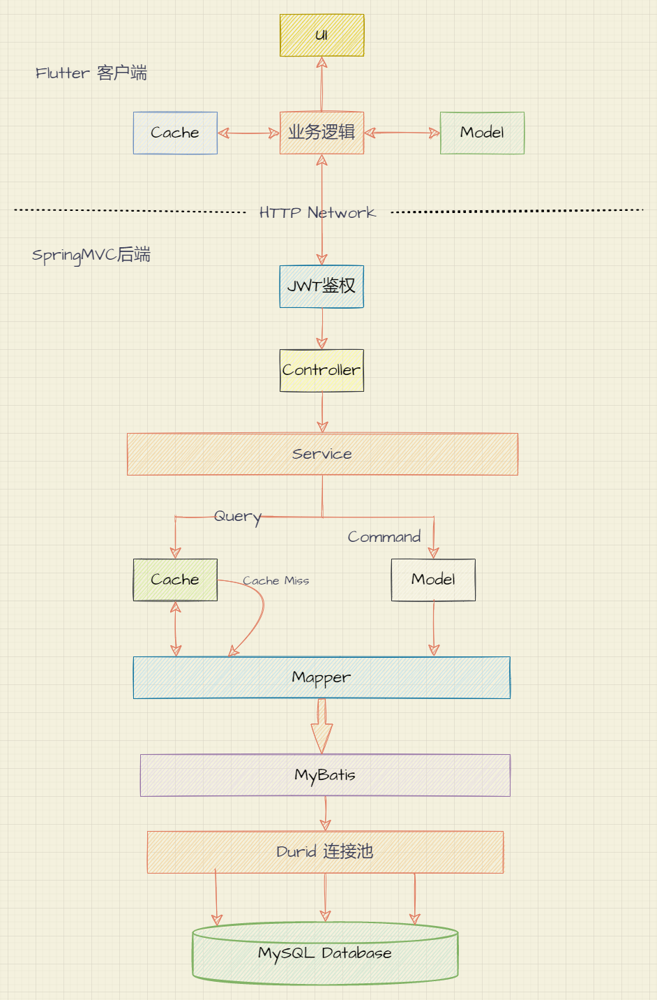
相关系统的论文研读与总结 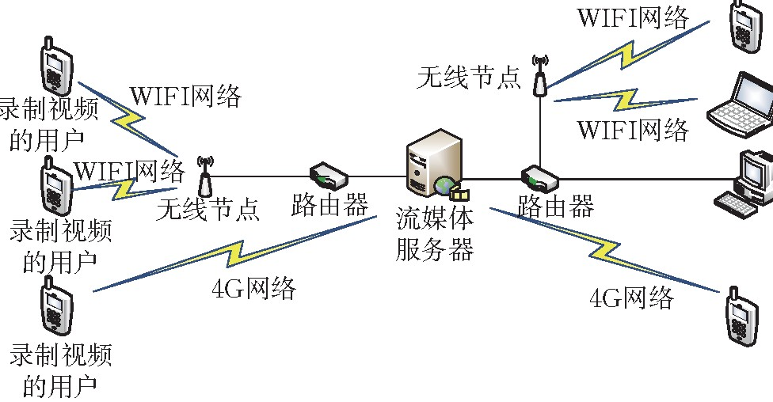该论文提出的方案是通过Android 手机摄像头和麦克风采集NV21 和PCM 原始数据，调用FFmpeg 将采集到的视音频原始数据进行H.264/AAC 编码并封装成FLV 格式，然后将压缩的数据通过RTMP流媒体协议推流到流媒体服务器；流媒体服务器接收到手机客户端发送的请求后，可向用户提供基于RTMP 协议的流媒体视频直播服务。
该论文提出了完整的直播系统视频采集与编码推流方案，该方案优点在于通过JNI调用C语言的FFmpeg进行视频编码，能够有较高的编码效率与二次开发灵活性，并进行了丰富的额外功能拓展，同时采用RTMP协议提高了视频流传输效率且有较低的延迟。
缺点在于需要通过编写 mk 文件来指定所要编译生成的so库名、引用的头文件目录、需要编译的.c 或.cpp 文件以及.a 静态库文件等，从而完成跨平台编译FFmpeg类库的任务，相对较为复杂。提供的基于RTMP 协议的流媒体视频直播服务对于移动客户端来说适用性较差（移动客户端普遍使用HlS格式）
该论文着重对直播平台的交互与适配、直播技术实现以及弹幕等技术问题进行了设计、实现，最后总实现了视频直播系统，进行了完整的软件工程实践，对于直播系统的功能设计有一定借鉴意义。
评价是又臭又长，关键技术点和整体设计放两张图一笔带过，聊天室用了非常简单的socket+handler还疯狂扔截图，一看几乎全是模板代码，最后还不忘扯一句eventBus，又是一笔带过，一点设计都没有，给人感觉就是安卓菜鸡。整篇里能看的也就讲视频播放系统那块，有还算不错的设计。
我说这篇论文怎么看着这么熟悉呢，一看参考文献，就是上面的第一篇论文，评价是纯纯浪费时间。
核心功能技术调研 - 直播播放技术调研 Bilibili开源的 Github 31K+ star 的原生播放器，基于ffmpeg开发，有非常优秀的性能，能够在更低功耗下保证较好的播放效果，且大小很小。缺点在于Android调试相对复杂，method channel带来部分性能损失。
Flutter最优秀的视频播放依赖之一，有Flutter最简洁强大的视频相关的基础功能提供，维护频繁，缺点在于功能很基本。
参考ExoPlayer（google推出的开源播放器）与IJKPlayer的以c语言为主的Flutter播放器，对m3u8有额外支持，但是比较古早，维护较少
流式播放器，貌似不兼容m3u8，且处理较为复杂，排除
Flutter中UI非常好看的播放器，但大部分UI针对普通视频而非直播，且直播仍然是流式。
总结 直播播放器调研目的在于选择更高效简易的播放器，在平衡 系统设计、开发工作量 和 依赖完善、丰富程度 的基础上，挑选最佳解决方案。
核心功能技术调研 - 直播推流技术调研 集成Flutter框架的直播推流SDK，好处是api非常丰富，坏处是丰富到无从下手，尝试后发现文档与实际SDK有部分出入，怀疑是文档api长时间未更新，没有其他额外教程，存在较大的试错风险。且使用移动端推流本就非常耗费性能。
PC端为主的推流方案： OBS OBS可以说是免费且强大的推流软件，有相当成熟的社区且在直播领域占有非常大的份额。同时也可以使用手机进行串流以进行移动+PC的直播模式（考虑到PC摄像头一般画质比较差）
总结 直播推流技术调研的目的在于综合考虑各方解决方案后选择成本更低，效果更好，更容易上手的推流方案，且直接决定了主播端应用的设计、架构和开发。
核心功能技术调研 - 直播服务器技术调研 SRS(Simple Realtime Server)是一个简单高效的实时视频服务器，支持RTMP、WebRTC、HLS、HTTP-FLV、SRT等多种实时流媒体协议。SRS Stack是一个一体化、开箱即用、开源的视频解决方案，可部署在云上或自建机房，以直播和WebRTC等能力赋能你的业务。
SRS使用C++开发，相对而言有较高的运行与处理性能，有丰富的文档和博客以及完善的社区支持，有非常多的相关功能，缺点就是有点过多。
简单高效的直播服务器：
安装和使用非常简单； 纯 Golang 编写，性能高，跨平台； 支持常用的传输协议、文件格式、编码格式； 传输协议与编码格式支持相对也较好，有点在于功能简洁，开箱即用。且基于Golang在服务端性能较好。
核心功能技术原型验证与测试 完成了部分前端架构设计与UI等代码编写，搭建完成后端推流服务器，并在PC进行了OBS推流与客户端观看的测试。
代码方面，主要使用移动端video_player、服务器livego、PC推流OBS的方案，图中左下角为电脑摄像头，中间为OBS推流直播，右侧为投影到电脑的手机实时画面，运行的是编写的客户端demo，背景为客户端代码。
经过验证与测试，证明了这套方案的可行性，同时发现的缺点主要在于直播延迟较大，约20s，主要原因在于服务器带宽较小且有其他服务在运行造成出网延迟较大，此外直播播放选用的是flv格式的视频源，本身就存在较大延迟，换到hlv格式（m3u8源）后有一定缓解。
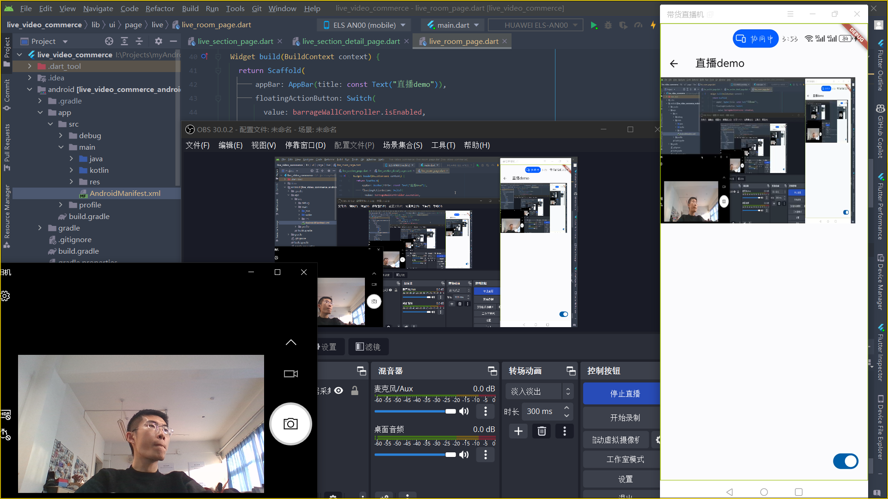非核心功能技术 - 推荐算法 技术选型 常见推荐算法有基于流行度的算法 ，基于用户行为数据的算法 ，基于内容的算法 ，基于关联规则的推荐 ，基于效用推荐 ，基于知识推荐 ，组合推荐算法 等，综合来看最终倾向于使用基于标签的算法 ，本质上是一种基于内容的算法，这种推荐仅需要得到两类信息: 项目特征的描述和用户过去的喜好信息。
利用领域专家给项目打标签的方法， 也即传统的分类系统(Taxonomy)， 另一种是用户给项目打标签， 也即大众分类系统 (Folksolomy)。 这种推荐系统的优点在于:
易于实现 ，不需要用户数据因此不存在稀疏性和冷启动问题 。基于物品本身特征推荐，因此不存在过度推荐热门的问题 。 然而，缺点在于抽取的特征既要保证准确性又要具有一定的实际意义，否则很难保证推荐结果的相关性 。豆瓣网采用人工维护tag的策略，依靠用户去维护内容的tag的准确性。由于商品是由卖家而非网站登记的，数据的规范性差 ，这会给基于内容的推荐带来一定困难。
在此过程中我参考了淘宝的推荐策略：
淘宝推荐系统的目标就是要为各个产品提供商品，店铺，人，类目属性各种维度的推荐。它的核心就是以类目属性和社会属性为纽带，将人，商品和店铺建立起联系。
淘宝的宝贝推荐原则:
基于内容的和关联规则 全网优质宝贝算分 根据推荐属性筛选TOP 基于推荐属性的关联关系 采用搜索引擎存储和检索优质宝贝 加入个性化用户信息 根据用户的购买和收藏记录产生可推荐的关联规则。对优质宝贝的算分需要考虑商品的相关属性，包括描述，评价，名称，违规，收藏人气，累计销量，UV，以及PV等等。此外，推荐系统根据用户的浏览，收藏，购买行为以及反馈信息，在Hadoop上来计算用户带权重的标签，用于进行个性化推荐。
在个性化推荐之上，淘宝还实现了基于内容的广告投放。由于个性化推荐出来的物品是用户所感兴趣的，可以想象，基于此之上的广告投放也应该会行之有效。
众所周知，淘宝具有海量的数据和商品问题，这里列举了淘宝数据的一些参数: 超过8亿种在线商品，100万产品，4万属性，等等。在淘宝实现推荐系统可能遇到的各种各样的难题，其中有:
商品种类繁多，生命周期短，很难及时收集到足够多的点击或购买数据 ，这使得基于用户行为的推荐方法，比如基于物品的推荐方法，发挥空间有限。因为商品是由卖家而非网站登记的，数据的规范性差，这又给基于内容的推荐带来了很大的困难。 8亿种商品中，重复的商品种类应该非常多，需要尽量避免推荐重复种类的商品给用户，但在数据规范性差、区分度差的情况下，如何归并重复商品种类，这本身也是个很大的难题。 大多数推荐系统只需要考虑如何满足买家的需求，在淘宝，还要考虑卖家的需求 。 摘自：https://pdai.tech/md/algorithm/alg-domain-suggest.html
此外我也考虑了协同过滤算法，相对而言协同过滤侧重使用用户对于商品的历史交互记录，即用户-商品二维矩阵，会有更高的复杂度，实现起来也更复杂，所以最终还是考虑首选基于内容的算法，其次可以考虑 Item-Based 协同过滤 。
沈尚腾. 面向网络直播平台的推荐系统设计与实现[D]. 四川:电子科技大学,2021.
该论文中涉及了采用基于内容的推荐算法的实时推荐模块，介绍了其所设计的推荐算法原理，该算法以基本的内容推荐为基础，借鉴了基于物品的协同过滤思想，通过循环的反馈-学习构成用户画像的动态变化过程，并基于长短期用户画像生成推荐列表。（p24-30）
在论文第五章中介绍了推荐系统使用的环境依赖与具体部署过程，着重介绍了Hadoop的环境搭建与配置，对推荐系统的开发提供了技术指导。
tag-based：
https://www.cnblogs.com/laiyaling/p/14040569.html
王家南. 基于文本标签的个性化推荐算法研究[D].郑州大学,2019.
陈正. 基于标签的多媒体推荐算法研究[D].南京理工大学,2021.DOI:10.27241/d.cnki.gnjgu.2021.003174.
Item-Based:
Badrul Sarwar, George Karypis, Joseph Konstan, and John Riedl. 2001. Item-based collaborative filtering recommendation algorithms.
意义 相对于系统开发中的其他任务，我本人对于推荐算法并不熟悉，所以在调研与原型阶段则需要花更多时间去查找相关资料并学习相关知识，对于这一模块的构建能够在初期就有大概的认识，避免在后期需求分析完成后软件设计时对这一重要模块的设计出现无从下手的情况，作为项目中非常大的不确定因素，前期调研的准确性也有助于我更清晰的对该模块工作量进行评估，从而对项目整体进度把握有更明晰的思路。
非核心功能原型 - 弹幕墙 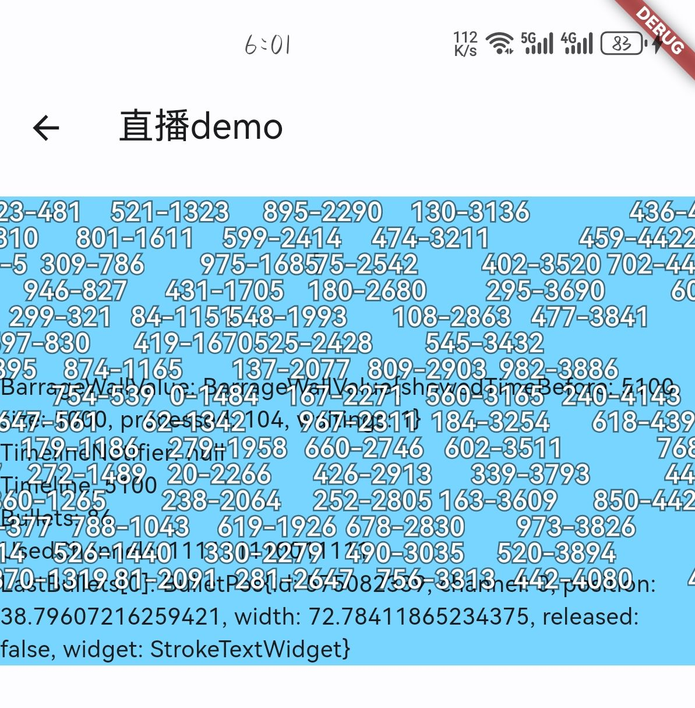比较简单的功能，这里用原型验证其可行性。
软件设计 概要设计 系统纵向分为三端，即主播管理端，服务端，用户端 。
业务上，将系统分为基本业务部分、直播流处理部分 与推荐系统部分 三大部分。
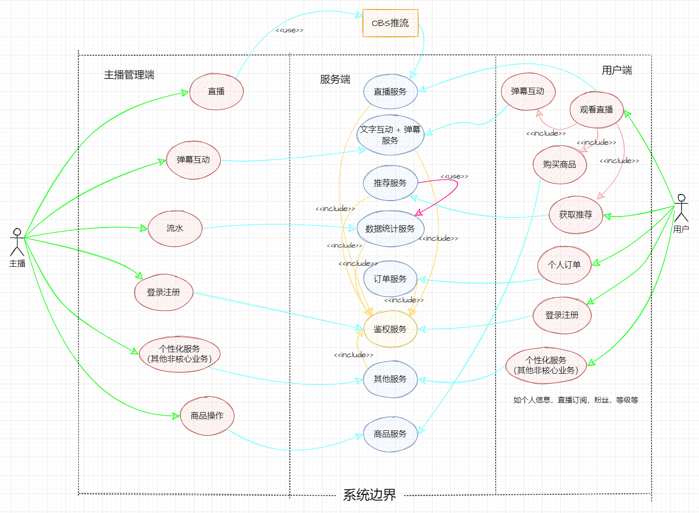横向分为四个模块，首先是直播服务模块 ，主要功能包括观众功能中的浏览直播推荐、观看直播、发送弹幕 ，主播功能中的直播管理与弹幕互动 ，其次是商品管理模块 ，主要功能包括观众功能中的购买商品、购物车、收货地址相关操作，查看订单、退货，主播功能中的上架商品、下架商品 ，第三是数据处理模块 ，主要包括主播功能中的流水分析 以及推荐系统中的全部功能 ，最后是用户管理模块 ，包括注册登录与用户信息管理。如下图
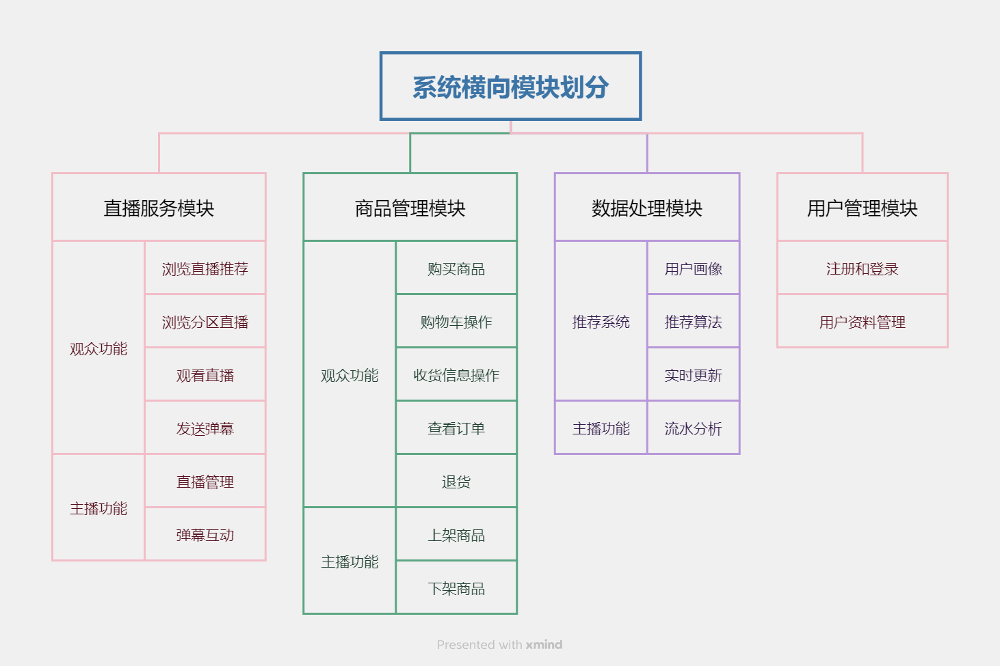
UI概要 用户所使用的app移动客户端方面，参照谷歌 Material Design3 风格规范进行UI设计，主要包括直播间分区与展示、直播间观看与交互、用户个人界面、商品购买相关界面 等UI设计工作，主要参考了主流直播平台交互进行设计，同时在购物历史等界面借鉴了经典电商平台如淘宝等应用的UI设计思路，主打简洁高效。
主播所使用的PC客户端方面，参照微软Fluent Design 风格规范进行UI设计，主要涉及统计图绘制、商品操作相关界面、弹幕展示与交互 等UI设计工作，主要交互思路参考了bilibili直播姬的交互设计，同时增加系统托盘等桌面端常用小功能及其UI。
统计图概要Demo：
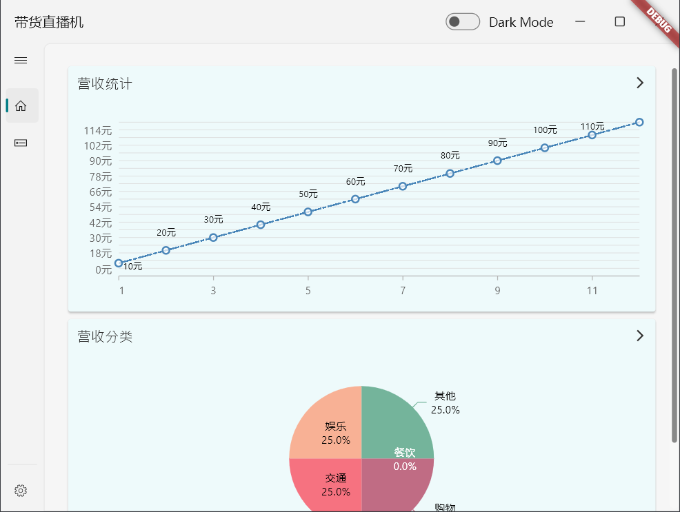迭代计划：增加数据筛选与对比 功能，酌情丰富图表种类
弹幕概要Demo：（半透明风格）
迭代计划：UI优化（与移动客户端UI同步优化迭代）
数据库-基本业务部分概要设计 E-R模型如下：
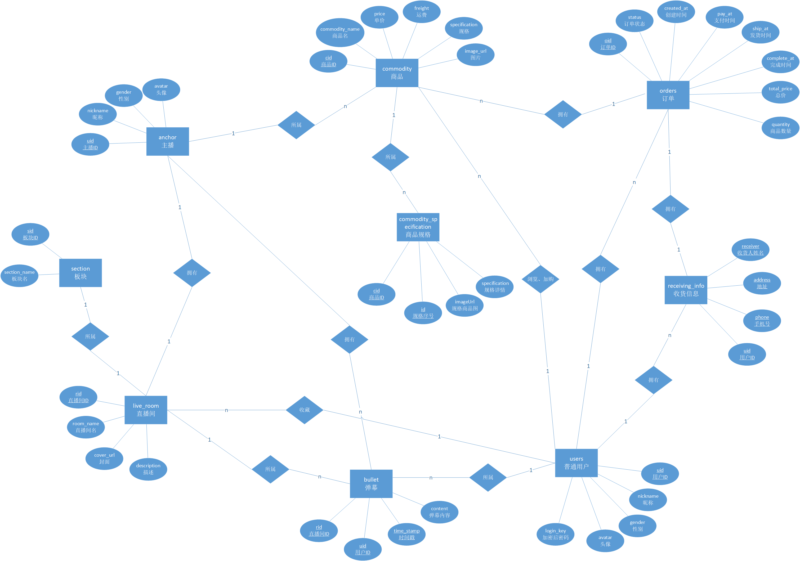
详细设计 关键模块流程 用户看直播、交互与购物
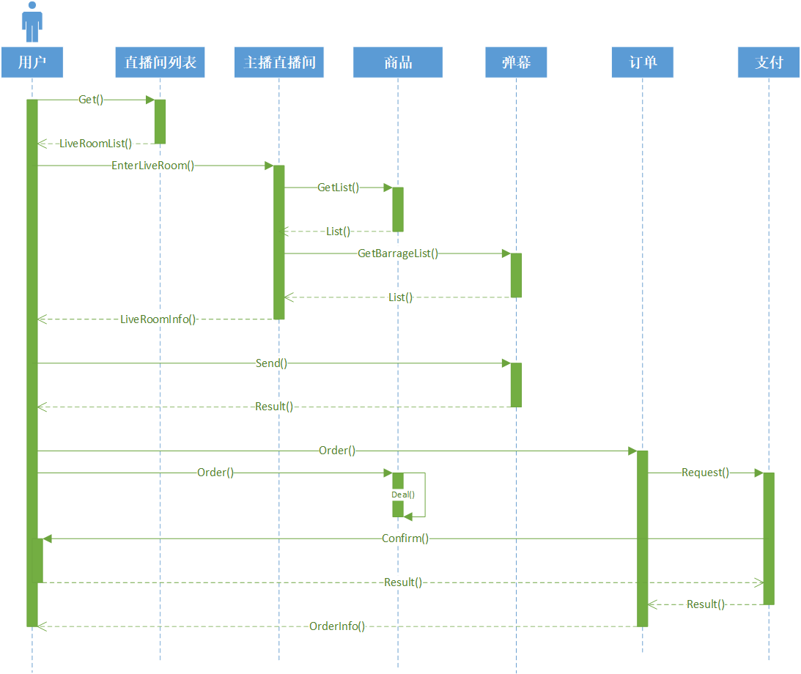主播开直播、交互与商品管理
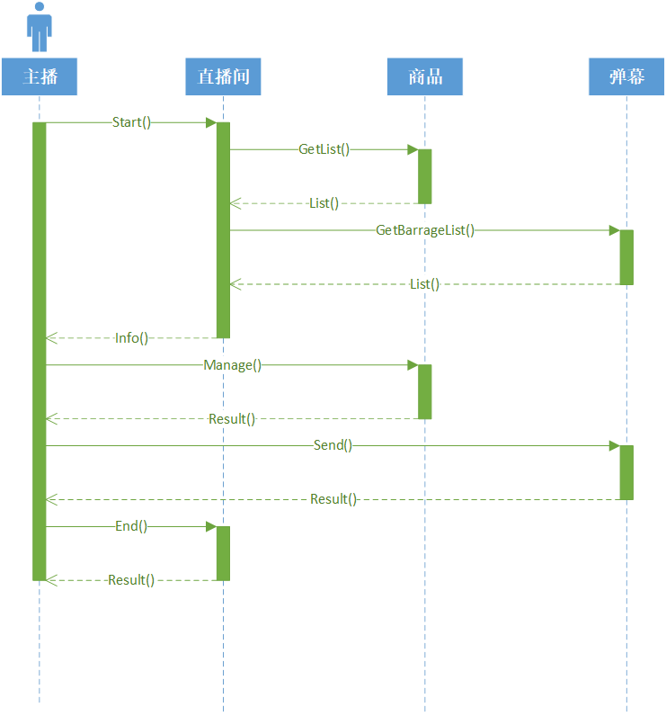
关键业务流程与相关数据结构 用户进入直播间购物流程图如下
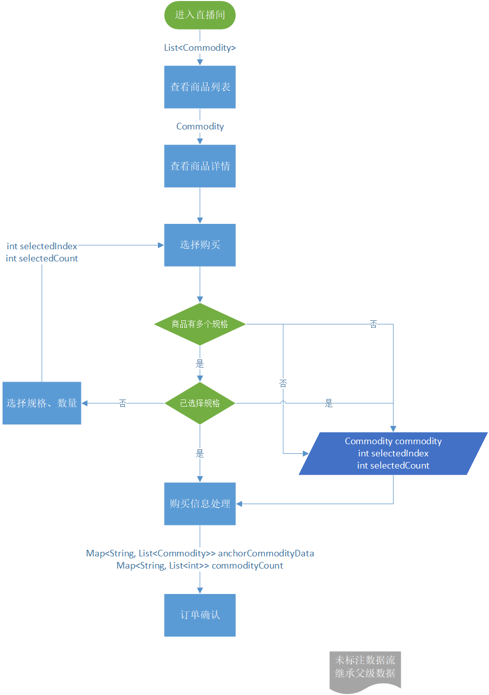相关数据结构
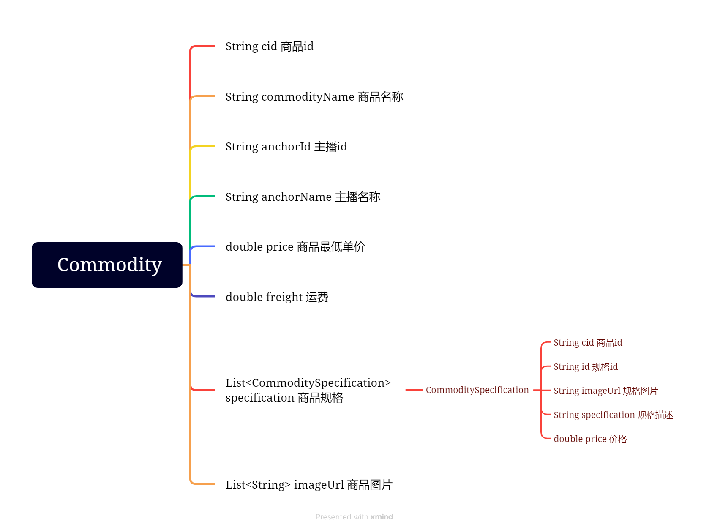1 2 3 4 5 6 7 8 9 10 11 12 13 14 15 16 17 18 19 20 21 22 23 24 25 26 27 28 29 30 31 32 33 34 35 36 37 38 39 40 41 42 43 44 45 46 47 48 49 50 51 52 53 54 55 56 57 58 59 60 61 62 63 64 65 66 67 68 69 70 71 72 73 74 75 76 77 78 79 80 81 82 import 'package:live_video_commerce/entity/commodity/commodity_specification.dart' ;class Commodity int cid; String commodityName; String anchorId; String anchorName; double price; double freight; List <CommoditySpecification> specification; List <String > imageUrl; Commodity({ required this .cid, required this .commodityName, required this .anchorId, required this .anchorName, required this .price, required this .freight, required this .specification, required this .imageUrl, }); factory Commodity.fromJson(Map <String , dynamic > json) { List <CommoditySpecification> specification = (json['specification' ] as List <dynamic >).map((e) => CommoditySpecification.fromJson(e)).toList(); double price = specification[0 ].price; for (var element in specification) { if (element.price < price){ price = element.price; } } List <String > images = (json['imageUrl' ] as List ).map((item) => item as String ).toList(); return Commodity( cid: json['cid' ] as int , commodityName: json['commodityName' ] as String , anchorId: json['anchorId' ] as String , anchorName: json['anchorName' ] as String , price: price, freight: json['freight' ] as double , specification: specification, imageUrl: images, ); } Map <String , dynamic > toJson () { return { 'id' : cid, 'name' : commodityName, 'anchorId' : anchorId, 'anchorName' : anchorName, 'price' : price, 'freight' : freight, 'specification' : specification, 'image' : imageUrl, }; } Commodity clone() { return Commodity( cid: cid, commodityName: commodityName, anchorId: anchorId, anchorName: anchorName, price: price, freight: freight, specification: specification.map((e) => e.clone()).toList(), imageUrl: imageUrl, ); } }
1 2 3 4 5 6 7 8 9 10 11 12 13 14 15 16 17 18 19 20 21 22 23 24 25 26 27 28 29 30 31 32 33 34 35 36 37 38 39 40 41 42 43 44 45 46 class CommoditySpecification int cid; int id; String imageUrl; String specification; double price; CommoditySpecification({ required this .cid, required this .id, required this .imageUrl, required this .specification, required this .price, }); factory CommoditySpecification.fromJson(Map <String , dynamic > json) { return CommoditySpecification( cid: json['cid' ] as int , id: json['id' ] as int , imageUrl: json['imageUrl' ] as String , specification: json['specification' ] as String , price: json['price' ] as double , ); } Map <String , dynamic > toJson () { return { 'cid' : cid, 'id' : id, 'imageUrl' : imageUrl, 'specification' : specification, 'price' : price, }; } CommoditySpecification clone() { return CommoditySpecification( cid: cid, id: id, imageUrl: imageUrl, specification: specification, price: price, ); } }
数据库详细设计 用户表
1 2 3 4 5 6 7 8 9 10 11 12 13 create table users( uid char (11 ) not null , nickname varchar (8 ) null , gender bool null , login_key varchar (128 ) not null , avatar varchar (128 ) null , constraint users_pk primary key (uid) ); create unique index users_uid_uindex on users (uid);
用户收货信息表
1 2 3 4 5 6 7 8 9 10 11 12 13 14 15 16 17 create table receiving_info( id int auto_increment , uid char (11 ) not null , name varchar (8 ) not null , phone char (11 ) not null , locate_area varchar (32 ) not null , detailed_address varchar (128 ) not null , constraint receiving_info_pk primary key (id), constraint receiving_info_users_uid_fk foreign key (uid) references users (uid) ); create unique index receiving_info_id_uindex on receiving_info (id);
用户默认收货信息表
1 2 3 4 5 6 7 8 9 10 11 12 13 14 15 create table user_default_receiving_info( uid char (11 ) not null , id int not null , constraint user_default_receiving_info_pk primary key (uid), constraint user_default_receiving_info_receiving_info_id_fk foreign key (id) references receiving_info (id), constraint user_default_receiving_info_users_uid_fk foreign key (uid) references users (uid) ); create unique index user_default_receiving_info_uid_uindex on user_default_receiving_info (uid);
主播表
1 2 3 4 5 6 7 8 9 10 11 12 13 create table anchor( uid char (11 ) not null , nickname varchar (8 ) not null , gender bool null , avatar varchar (128 ) not null , constraint anchor_pk primary key (uid) ); create unique index anchor_uid_uindex on anchor (uid);
商品表
1 2 3 4 5 6 7 8 9 10 11 12 13 14 15 16 17 18 19 20 21 22 create table commodity( cid int auto_increment, uid char (11 ) not null ,# 所属主播 rid int not null , commodity_name varchar (32 ) not null , price double not null , #应该删掉 freight double default 0 not null , constraint commodity_pk primary key (cid), constraint commodity_live_room_rid_fk foreign key (rid) references live_room (rid), constraint commodity_anchor_uid_fk foreign key (uid) references anchor (uid); ); create unique index commodity_cid_uindex on commodity (cid); create index commodity_uid_index on commodity (uid);
商品图片
1 2 3 4 5 6 7 8 9 10 create table commodity_images( cid int not null , image varchar (128 ) not null , constraint commodity_images_pk primary key (cid,image), constraint commodity_images_commodity_cid_fk foreign key (cid) references commodity (cid) );
商品规格表
1 2 3 4 5 6 7 8 9 10 11 12 13 14 15 16 create table commodity_specification( cid int not null , id int not null , image_url varchar (128 ) not null , specification varchar (32 ) not null , price double not null ， constraint commodity_specification_pk primary key (cid,id), constraint commodity_specification_commodity_cid_fk foreign key (cid) references commodity (cid) ); create index commodity_specification_id_index on commodity_specification (id);
商品浏览历史
1 2 3 4 5 6 7 8 9 10 11 create table commodity_browse_history( uid char (11 ) not null , cid int not null , browse_date date not null , constraint commodity_browse_history_pk primary key (uid,cid,browse_date), constraint commodity_browse_history_users_uid_fk foreign key (uid) references users (uid) );
板块表
1 2 3 4 5 6 7 8 9 10 11 create table section( sid int auto_increment, section_name varchar (8 ) not null , constraint section_pk primary key (sid) ); create unique index section_sid_uindex on section (sid);
直播间表
1 2 3 4 5 6 7 8 9 10 11 12 13 14 15 16 17 18 19 20 21 22 create table live_room( rid int auto_increment, uid char (11 ) not null , section_id int not null room_name varchar (8 ) not null , live_url varchar (128 ) not null , cover_url varchar (128 ) not null , danmu_url varchar (128 ) not null , room_description varchar (32 ) null , live_status bool not nnull, constraint live_room_pk primary key (rid), constraint live_room_anchor_uid_fk foreign key (uid) references anchor (uid), constraint live_room_section_sid_fk foreign key (section_id) references section (sid) ); create unique index live_room_rid_uindex on live_room (rid);
弹幕表
1 2 3 4 5 6 7 8 9 10 11 12 13 14 15 16 create table bullet( rid int not null , uid char (11 ) not null , time_stamp char (64 ) not null , content varchar (64 ) not null , constraint bullet_pk primary key (rid,uid,time_stamp), constraint bullet_anchor_uid_fk foreign key (uid) references anchor (uid), constraint bullet_users_uid_fk foreign key (uid) references users (uid) ); create unique index bullet_uindex on bullet (rid,uid,time_stamp);
订单表(废弃)
1 2 3 4 5 6 7 8 9 10 11 12 13 14 15 16 17 18 19 20 21 22 23 24 25 26 27 28 29 create table orders( oid int auto_increment, uid char (11 ) not null , receiving_info_id int not null , commodity_id int not null , specification_id int not null , status smallint not null , created_at datetime not null , pay_at datetime null , ship_at datetime null , complete_at datetime null , total_price double not null , quantity int not null , constraint orders_pk primary key (oid), constraint orders_commodity_cid_fk foreign key (commodity_id) references commodity (cid), constraint orders_receiving_info_id_fk foreign key (receiving_info_id) references receiving_info (id), constraint orders_commodity_specification_id_fk foreign key (specification_id) references commodity_specification (id), constraint orders_users_uid_fk foreign key (uid) references users (uid); ); create unique index orders_oid_uindex on orders (oid);
订单商品信息表
1 2 3 4 5 6 7 8 9 10 11 12 13 14 15 16 17 18 19 20 21 22 23 24 25 create table order_commodity( oid char (16 ) not null , uid char (11 ) not null , commodity_id int not null , receiving_info_id int not null , specification_id int not null , quantity int not null , total_price double not null , constraint order_commodity_pk primary key (oid), constraint order_commodity_commodity_cid_fk foreign key (commodity_id) references commodity (cid), constraint order_commodity_commodity_specification_cid_fk foreign key (specification_id) references commodity_specification (cid), constraint order_commodity_receiving_info_id_fk foreign key (receiving_info_id) references receiving_info (id), constraint order_commodity_users_uid_fk foreign key (uid) references users (uid) ); create unique index order_commodity_oid_uindex on order_commodity (oid);
订单状态表
1 2 3 4 5 6 7 8 9 10 11 12 13 14 15 create table order_status( oid char (16 ) not null , order_status int not null , create_at datetime not null , pay_at datetime null , ship_at datetime null , complete_at datetime null , constraint order_status_pk primary key (oid), constraint order_status_order_commodity_oid_fk foreign key (oid) references order_commodity (oid) );
用户关注的直播间
1 2 3 4 5 6 7 8 9 10 11 12 create table user_room_follow( uid char (11 ) not null , room_id int not null , constraint user_room_follow_pk primary key (uid,room_id), constraint user_room_follow_live_room_rid_fk foreign key (room_id) references live_room (rid), constraint user_room_follow_users_uid_fk foreign key (uid) references users (uid) );
用户的商品浏览历史
1 2 3 4 5 6 7 8 9 10 11 12 13 14 15 create table user_commerce_browse( uid char (11 ) not null , commerce_id int not null , browse_time datetime not null , constraint user_commerce_browse_pk primary key (uid,commerce_id), constraint user_commerce_browse_commodity_cid_fk foreign key (commerce_id) references commodity (cid), constraint user_commerce_browse_users_uid_fk foreign key (uid) references users (uid) ); create unique index user_commerce_browse_index on user_commerce_browse(uid,commerce_id);
用户的直播浏览历史
1 2 3 4 5 6 7 8 9 10 11 12 13 14 15 create table user_room_browse( uid char (11 ) not null , room_id int not null , browse_time datetime not null , constraint user_room_browse_pk primary key (uid,room_id), constraint user_room_browse_room_rid_fk foreign key (room_id) references live_room (rid), constraint user_room_browse_users_uid_fk foreign key (uid) references users (uid) ); create unique index user_room_browse_index on user_room_browse(uid,room_id);
用户加购
1 2 3 4 5 6 7 8 9 10 11 12 13 14 15 16 17 18 19 create table shopping_cart( uid char (11 ) not null , cid int not null , specification_id int not null , counts int not null , add_time datetime not null , constraint shopping_cart_pk primary key (uid,cid,specification_id), constraint shopping_cart_commodity_cid_fk foreign key (cid) references commodity (cid), constraint shopping_cart_users_uid_fk foreign key (uid) references users (uid), constraint shopping_cart_specification_id_fk foreign key (specification_id) references commodity_specification(id) ); create unique index shopping_cart_index on shopping_cart(uid,cid,specification_id);
系统基本业务模块功能IPO详细设计 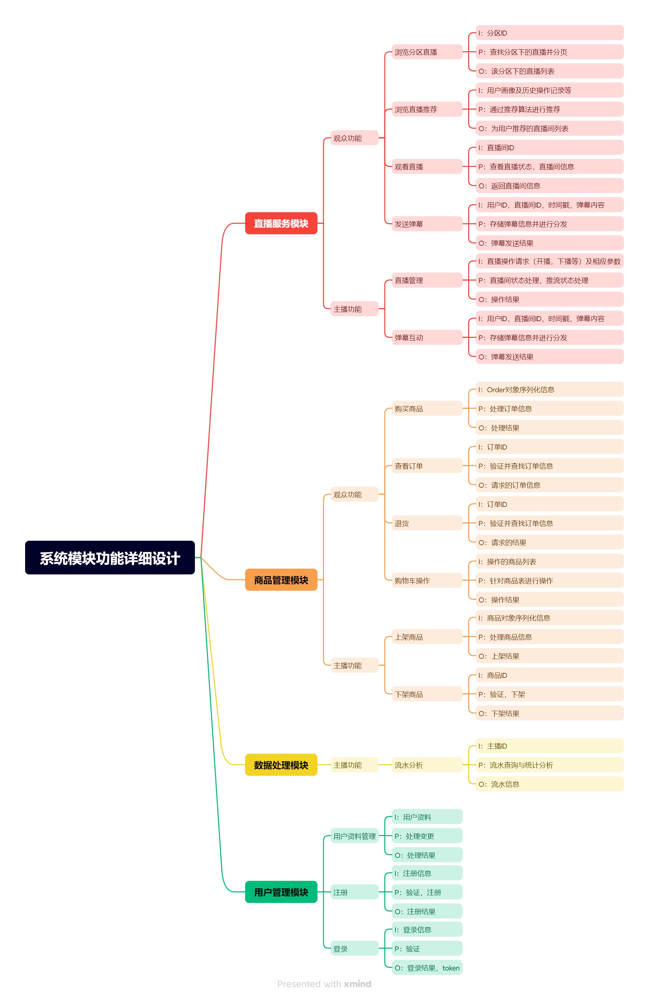
开发 API接口 UI与相应业务逻辑迭代 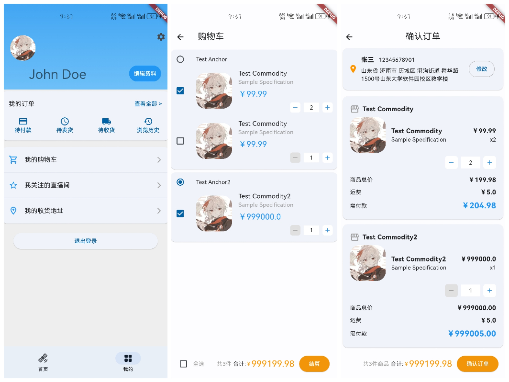此次迭代在原有的UI的Demo的基础上，对直播间中商品展示以及购买、结算的UI与逻辑进行了设计与开发，以详细设计的业务流程为蓝本进行了逻辑设计与开发，完成了一组可使用的直播间商品浏览、购买、结算等一系列操作的用户界面设计开发。
此外，对原有的”我的“界面进行了丰富与细化，将其重构为功能入口，同时实现了购物车选择、删除、增删、结算等操作的UI与逻辑。
迭代信息与记录 相关Git记录
1 2 3 4 5 6 7 8 9 10 11 12 13 14 15 16 17 18 19 20 21 22 23 24 25 26 27 28 29 30 31 32 33 34 35 36 37 38 39 40 41 42 43 44 45 46 47 48 49 50 51 52 53 54 55 56 57 58 59 60 61 62 63 64 65 66 67 68 69 70 71 72 73 74 75 76 77 78 79 80 81 82 83 84 85 86 87 88 89 90 91 92 93 94 95 96 97 98 99 100 101 102 103 104 105 106 107 108 109 110 111 112 113 114 115 116 117 118 119 120 121 122 123 124 125 126 127 128 129 130 131 132 commit a6f73d26cd1bb822097159c8343d3a17c99a21fe Author: Karl Eric <2134356214@qq.com> Date: Thu Jan 25 22:51:13 2024 +0800 fix:收货信息将地址属性拆分；feat：新增、编辑收货信息demo UI commit d1a100bf12c739f3db7fbab38995639d96743c38 Author: Karl Eric <2134356214@qq.com> Date: Thu Jan 25 19:41:14 2024 +0800 fix:收货信息增加id；feat：我的收货信息初步UI commit 89cdc604482a45fa5813304529aeb09adbb7d9eb Author: Karl Eric <2134356214@qq.com> Date: Thu Jan 25 09:20:22 2024 +0800 fix:浅拷贝造成的bug commit d63cb5fbf24dcc075ab2d7a6c5c7a4472e8cfa97 Author: Karl Eric <2134356214@qq.com> Date: Wed Jan 24 23:51:39 2024 +0800 feat:规格选择，修正specification设计问题（没有价格），新增规格选择UI与逻辑 todo：存在一个bug：选择规格后从确认订单界面返回重新选择规格时只剩选过的规格，原因应该是浅拷贝。不如直接改成传递selectedIndex值 commit e9d62c4b09f6595842da2c9b44874cf5d7951425 Author: Karl Eric <2134356214@qq.com> Date: Mon Jan 22 22:50:11 2024 +0800 fix：修正order数据结构，修正件数计算组件的回调使用错误；feat：购物车跳转到订单确认，订单确认中订单卡片支持多同一主播商品，增加件数与价格计算逻辑 commit 1195cf563ae69fef44c904902e5833a35a47b1a6 Author: Karl Eric <2134356214@qq.com> Date: Mon Jan 22 20:50:21 2024 +0800 feat:调整购物车商品删除逻辑 commit e8a812cf55307be667e6743ebc1aa2b032c3754b Author: Karl Eric <2134356214@qq.com> Date: Mon Jan 22 20:28:05 2024 +0800 feat:调整购物车商品选择逻辑 commit 530c14efcc96ea5b14fcda35ffc494c7376016d2 Author: Karl Eric <2134356214@qq.com> Date: Mon Jan 22 11:02:19 2024 +0800 feat:调整购物车卡片样式 commit e410a9d6a46782a0997714ac262d81b1a1d3048b Author: Karl Eric <2134356214@qq.com> Date: Mon Jan 22 10:00:43 2024 +0800 feat:购物车逻辑 commit b724cca7e3ac8f8e6ce18f0e39bd813a5df3adfb Author: Karl Eric <2134356214@qq.com> Date: Sun Jan 21 23:40:13 2024 +0800 feat:购物车界面UI demo，计数组件新增自定义参数：大小，排布 commit 2a4d2cae304743cc51321106835b380327c969b3 Author: Karl Eric <2134356214@qq.com> Date: Sun Jan 21 16:08:45 2024 +0800 refactor:重构用户界面 commit 9742df1768077d94363406cd852dadf96bdb9cda Author: Karl Eric <2134356214@qq.com> Date: Sun Jan 21 11:13:24 2024 +0800 style：去除直播间界面弃用代码 commit e7a2495b0dfb8a6c98a2f0fd7df570ffbd064298 Author: Karl Eric <2134356214@qq.com> Date: Sun Jan 21 11:11:23 2024 +0800 feat:针对直播界面中商品相关的逻辑解耦 commit ad1ab1265c5f0bceb281d5381e43ce097f27d4d0 Author: Karl Eric <2134356214@qq.com> Date: Sun Jan 21 10:36:55 2024 +0800 feat：确认订单时增删件数 commit a4f2df7929a2c737bb27e729de71fea8fa76c3d8 Author: Karl Eric <2134356214@qq.com> Date: Sat Jan 20 22:50:55 2024 +0800 feat：确认订单 commit 7247e4bfc10104715fc14091dece7a4f6bceee37 Author: Karl Eric <2134356214@qq.com> Date: Sat Jan 20 17:21:41 2024 +0800 feat:商品规格对象化 commit d4c9c2fc009f51d32ba68ba205a1b1700ec5dcda Author: Karl Eric <2134356214@qq.com> Date: Fri Jan 19 23:44:37 2024 +0800 feat:直播商品浏览与商品详情 commit 7a4141541b5a28138e7ddaeadec58f0a2ed081b4 Author: Karl Eric <2134356214@qq.com> Date: Fri Jan 19 18:00:18 2024 +0800 feat:商品列表 commit 4cbc485798a9f036c9294dd69d4deee77f8e9ce9 Author: Karl Eric <2134356214@qq.com> Date: Fri Jan 19 17:06:20 2024 +0800 feat:消息列表自动滚动到底部 commit 87464b52ad8042b6ab52824f9accd2a1b848930c Author: Karl Eric <2134356214@qq.com> Date: Fri Jan 19 16:39:26 2024 +0800 fix:修复弹幕无法隐藏 commit 2b5eeab4dbc76494580b80d32abd6060c19ac368 Author: Karl Eric <2134356214@qq.com> Date: Thu Jan 18 23:19:23 2024 +0800 feat:尝试重构直播间：speed_dial方案（弃用）购物组件可考虑该方案 commit 8482a4979eb586ad818b8ea5011bc8988ec87e24 Author: Karl Eric <2134356214@qq.com> Date: Thu Jan 18 19:51:50 2024 +0800 feat:重构直播间 demo
直播间逻辑与功能迭代 主要参考学习了 dart_simple_live 的直播播放逻辑
此次迭代的主要工作是针对直播播放器原型的问题进行改进优化，同时对弹幕性能差、直播控制代码等进行优化。
直播播放器原型的问题主要在于UI与交互逻辑耦合度较高，导致整体性能差，代码维护困难，使用体验欠佳。究其原因，一方面，在于原型使用的video_player依赖只是提供了最基本的视频播放功能，视频控制部分的UI与逻辑需要开发者自己设计开发，该过程尤其是播放器整体的代码划分与设计对开发者要求较高；另一方面，在于原型开发时并没有进行太过细致设计，仅完成了相应功能，所以需要开发阶段进行详细分析、设计与重构。
此次迭代我参考了现有播放器的播放逻辑，一方面，针对播放器的依赖使用进行重新考虑，另一方面，主要学习了现有成熟项目的直播与直播控制的模块设计，针对直播播放、弹幕、手势、控制逻辑等子模块的设计与解耦进行了学习与思考。
具体UML如下：
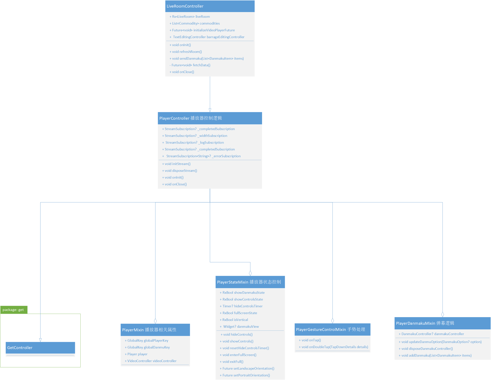其中，Mixin 是一种在多个类层次结构中重用代码的方法。mixin 是面向对象程序设计语言中的类，其他类可以访问 mixin 类的方法、变量而不必成为其子类。Mixin 的作用就是 在多个类层次结构中重用类的代码 ，在类中混入其他功能，来增强代码的复用能力。可以使用 with 关键字将多个 mixins 放入同一个类中 ，而且 dart 对这个数量没有作任何限制。
在逻辑表现上，mixin的作用类似于聚合，所以图中用聚合来表示
具体思路为：将不同子模块控制代码分别在不同Mixin中进行定义实现，通过继承自GetController的PlayerController完成对播放器接口的逻辑封装实现，最终由LiveRoomController继承该控制类并完成界面的属性、数据、状态的管理以及具体方法的逻辑实现。
迭代信息与记录 相关git记录
1 2 3 4 5 6 7 8 9 10 11 12 13 14 15 16 17 18 19 20 21 22 23 24 25 26 27 28 29 30 31 32 33 34 35 commit 7ba03c5eaf029bc6781d986be62b2d129d1c1fe6 Author: Karl Eric <2134356214@qq.com> Date: Sun Jan 28 18:53:55 2024 +0800 fix:修正一系列直播bug commit 7b36c835ee0a2cdefe386c9e21f8a2a25158f96c Author: Karl Eric <2134356214@qq.com> Date: Sun Jan 28 18:06:12 2024 +0800 feat：路由换为适合get的路由方式；fix：修正controller没有put commit 43fc04277281024acb619dd90c6b2492bf5a80c9 Author: Karl Eric <2134356214@qq.com> Date: Sun Jan 28 12:50:29 2024 +0800 feat:直播间部分控制逻辑；修正直播间对象的数据结构 commit be5dbdbf8c9beea897aeefcb4bf376ebc2f3a339 Author: Karl Eric <2134356214@qq.com> Date: Sun Jan 28 10:56:20 2024 +0800 feat:直播控制初步 与视频控制 commit 051f4c7551755f562cf3e7cbc3b949e177991476 Author: Karl Eric <2134356214@qq.com> Date: Sun Jan 28 10:04:12 2024 +0800 feat:player控制器 commit 6bab2a46ad13bd6ca545564427c512ccbe3d1fb9 Author: Karl Eric <2134356214@qq.com> Date: Sun Jan 28 09:14:43 2024 +0800 迁移弹幕
订单业务数据结构与数据库设计迭代 在设计订单相关的数据库结构时，更多地直接参考了数据结构设计，而没有考虑业务本身以及数据库范式，导致在后端业务开发时发现数据库设计不能很好地满足业务的效率需求。
此次迭代主要针对订单相关的数据库以及数据结构进行重构与迭代。首先针对原有的数据库表进行了分析，造成其效率低的主要原因在于，存在用户一次性购买了同一主播的多个商品的情况，这些订单的订单号、订单的状态信息都是相同的，而这些信息在数据库表中相当于被多次存储，属于无效的冗余 数据，实际上，该数据库表不满足范式中的2NF。同时，在逻辑上，订单的状态数据与订单的商品购买数据本就是不相关的数据结构，耦合 在一张表中导致在单独查询订单商品数据或状态数据时都需要到同一张表中查询，导致在数据库结构需要改动时需要同时检查订单商品数据和状态数据的所有业务代码。
基于此，此次迭代主要完成了将订单业务数据结构与数据库重构，将其订单商品数据与状态数据解耦，重构对应的数据结构并重新进行数据库设计，主要的类及其关系设计如下类图所示：
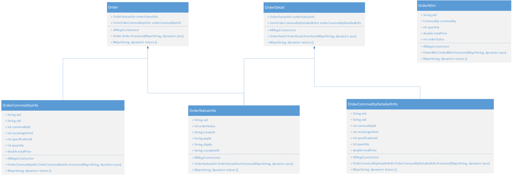主要将原本的订单实体类中订单的状态数据与订单的商品购买数据进行了拆分，同时根据业务需要对细粒度进行划分，不同细粒度对应不同对象，细粒度由小到大分为OrderMini，Order，OrderDetail，其中OrderMini主要用作订单列表中对订单的简略信息获取，Order主要用于仅需要获取订单状态+商品信息或订单状态+收货信息或订单状态+商品规格等不完全组合场景，OrderDetail主要用作对单笔订单详情的展示。
同时基于此思路完成数据库订单表的重构，由于订单业务与其他业务的弱耦合，所以没有其他业务模块受影响。主要思路即将原表拆分为 订单商品信息表和订单状态表，可以通过订单id进行关联，具体表结构见迭代信息与记录。
此次迭代与重构主要解决了订单业务在开发中发现的设计与实际的不契合的问题，针对数据结构与数据库的可读性、可维护性与效率进行了优化，提高了业务可用性、稳定性与健壮性。
迭代信息与记录 原数据库表
1 2 3 4 5 6 7 8 9 10 11 12 13 14 15 16 17 18 19 20 21 22 23 24 25 26 27 28 29 create table orders( oid int auto_increment, uid char (11 ) not null , receiving_info_id int not null , commodity_id int not null , specification_id int not null , status smallint not null , created_at datetime not null , pay_at datetime null , ship_at datetime null , complete_at datetime null , total_price double not null , quantity int not null , constraint orders_pk primary key (oid), constraint orders_commodity_cid_fk foreign key (commodity_id) references commodity (cid), constraint orders_receiving_info_id_fk foreign key (receiving_info_id) references receiving_info (id), constraint orders_commodity_specification_id_fk foreign key (specification_id) references commodity_specification (id), constraint orders_users_uid_fk foreign key (uid) references users (uid); ); create unique index orders_oid_uindex on orders (oid);
迭代后数据库表
1 2 3 4 5 6 7 8 9 10 11 12 13 14 15 16 17 18 19 20 21 22 23 24 25 # 订单商品信息表 create table order_commodity( oid char (16 ) not null , uid char (11 ) not null , commodity_id int not null , receiving_info_id int not null , specification_id int not null , quantity int not null , total_price double not null , constraint order_commodity_pk primary key (oid), constraint order_commodity_commodity_cid_fk foreign key (commodity_id) references commodity (cid), constraint order_commodity_commodity_specification_cid_fk foreign key (specification_id) references commodity_specification (cid), constraint order_commodity_receiving_info_id_fk foreign key (receiving_info_id) references receiving_info (id), constraint order_commodity_users_uid_fk foreign key (uid) references users (uid) ); create unique index order_commodity_oid_uindex on order_commodity (oid);
1 2 3 4 5 6 7 8 9 10 11 12 13 14 15 # 订单状态表 create table order_status( oid char (16 ) not null , order_status int not null , create_at datetime not null , pay_at datetime null , ship_at datetime null , complete_at datetime null , constraint order_status_pk primary key (oid), constraint order_status_order_commodity_oid_fk foreign key (oid) references order_commodity (oid) );
测试